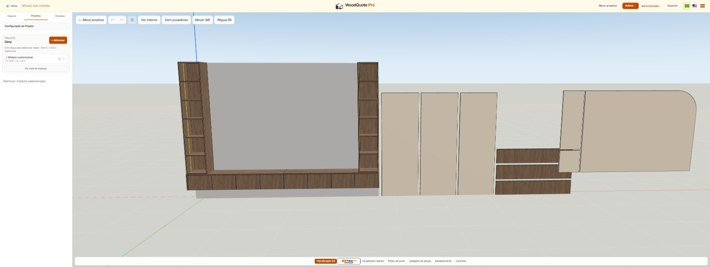
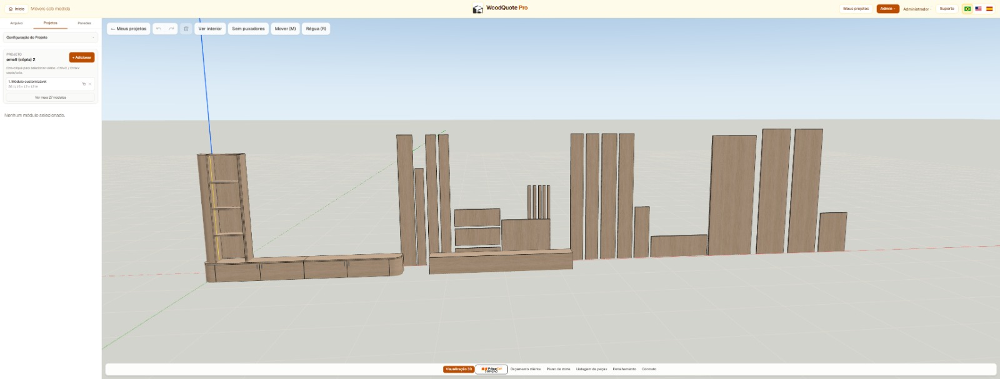
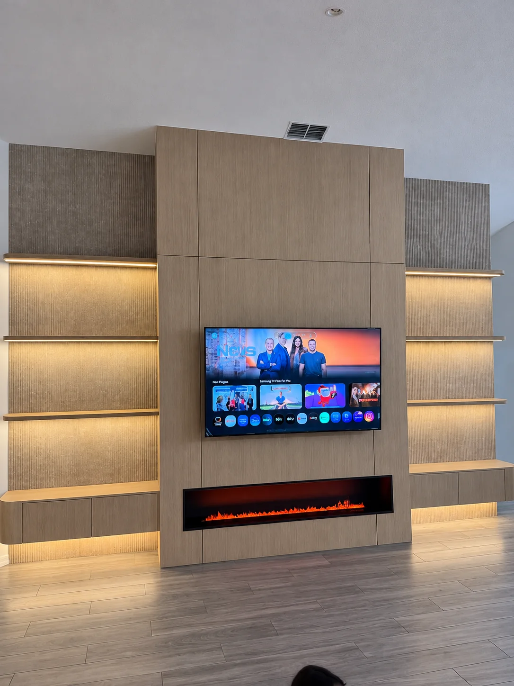
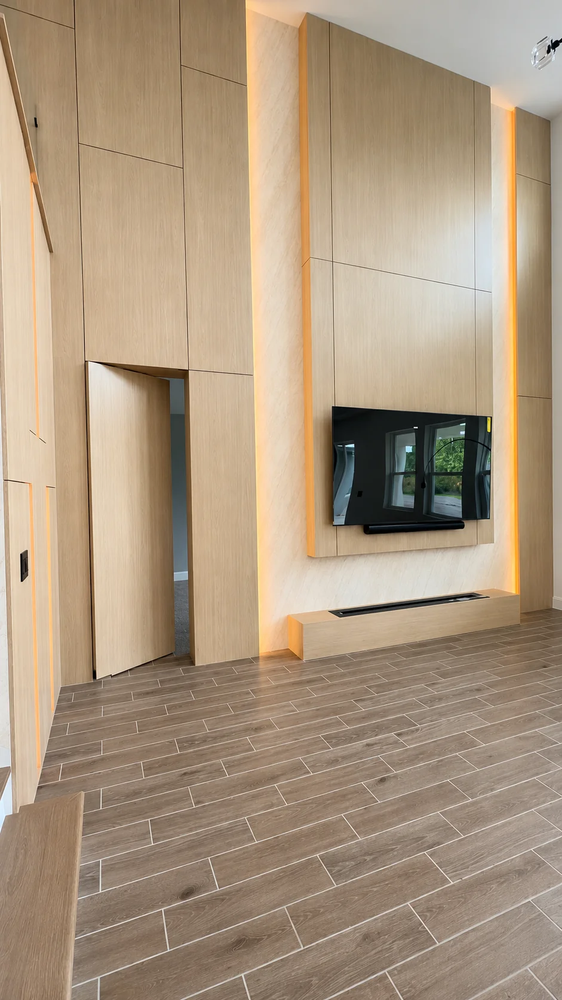
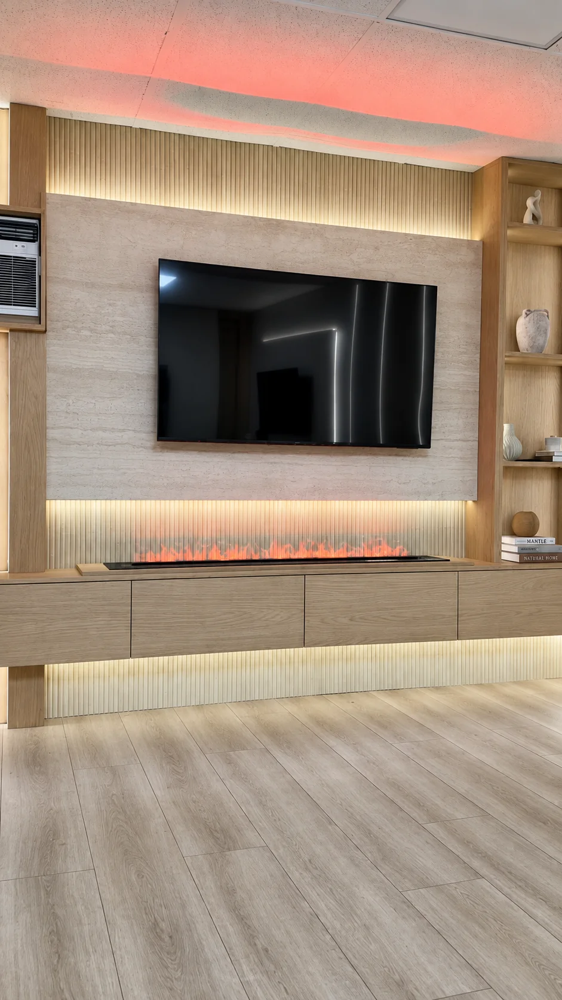

Menos cálculos dispersos.
Conecta la información del diseño y las piezas para organizar la preparación de la producción.
TECNOLOGÍA PARA QUIENES CREAN MUEBLES
Diseña muebles en 3D, organiza las piezas y planifica el corte en un proceso conectado. Lleva tu próxima idea al taller con mayor claridad en cada etapa.
10 días gratis con todas las funciones de Full, incluso si eliges Basic.




Diseño 3D → Piezas → Plan de corte → Producción
TU RUTINA PUEDE SER DIFERENTE
Quien trabaja en carpintería lo sabe: una decisión de diseño acompaña a cada pieza hasta el armado.
Conecta la información del diseño y las piezas para organizar la preparación de la producción.
La visualización 3D ayuda a presentar la idea y revisar el mueble antes de llevarlo al taller.
Integra la planificación de corte al proceso con una visión de las piezas que componen el diseño.
UN PROCESO. DE PRINCIPIO A FIN.
Conoce el camino del diseño a la producción. Selecciona una etapa y descubre cómo WoodQuote Pro acompaña tu trabajo.
Visualiza el mueble en 3D para desarrollar la idea y presentar el diseño con mayor claridad.
Del primer diseño a la preparación para producir.PROYECTOS TERMINADOS
Explora los espacios, los acabados y los detalles de los muebles fabricados.
Desliza para explorar




Mira los espacios terminados y sus detalles en video.
MÁS CONTINUIDAD EN TU RUTINA
Una plataforma conectada tiene sentido cuando ayuda a llevar lo planificado a la siguiente etapa del trabajo.
Elige el plan que se adapte al ritmo de tu producción.
MÍRALO EN ACCIÓN
Mira la creación y los ajustes de un mueble directamente en la plataforma, en una demostración de 5 minutos.
No se pudo iniciar el video. Toca reproducir para intentarlo de nuevo.
Interfaz presentada en portugués. Usa la pantalla completa para ver los detalles.
Prueba gratis por 10 díasELIGE TU PRÓXIMO PASO
10 días gratis con todas las funciones de Full, incluso si eliges Basic.
BASIC
Precio promocional · USD
US$ 29.99 /mes
Habilita impresión, etiquetas, DXF, listado, detalles y contrato. Al usar el crédito, el proyecto queda bloqueado para cambios posteriores.
FULL
Precio promocional · USD
US$ 199.00 /mes
Precios en dólares estadounidenses. Consulta las condiciones de cobro y cancelación en el sitio principal antes de iniciar la prueba.
TU PRÓXIMO PROYECTO EMPIEZA AQUÍ
10 días gratis con todas las funciones de Full, incluso si eliges Basic.
Prueba gratis por 10 díasConsulta las funciones, la duración de la prueba y las condiciones de suscripción antes de comenzar.
ANTES DEL PRIMER PROYECTO
Para quienes diseñan y fabrican muebles: carpinteros independientes, talleres y empresas de muebles a medida que quieren conectar el diseño con la producción.
En el sitio principal de WoodQuote Pro. Esta página presenta la solución y te dirige allí.
10 días gratis con todas las funciones de Full, incluso si eliges Basic.
Basic incluye 5 renders por día y visualización del plan de corte. Full incluye todas las funciones y 20 renders por día. Consulta la comparación de planes de arriba para conocer las reglas de créditos.
HABLA CON NOSOTROS
Habla con nuestro equipo sobre los planes y encuentra la opción para tu trabajo.